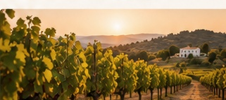
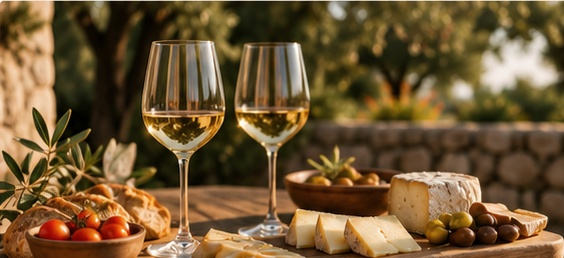
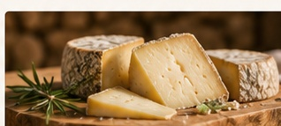
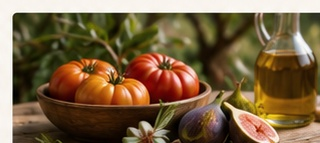

Rural Ibiza / Experiences
Tasting Ibiza.
The island through local wine, seasonal food and generous hospitality.
From €79 per person
OverviewHighlightsWhat's includedGood to knowLocation
Experience the island
An authentic encounter.
An introduction to Ibiza's food culture through the people who grow, produce and make it. Taste local wines, artisan cheeses and seasonal produce in a relaxed countryside setting.
“A different perspective on the island — thoughtful, unhurried and genuinely local.”
The experience
Three moments to remember
Artisan cheeses

Seasonal produce
Practical details
What's included
- ↗ A guided tasting of local wines
- ↗ Artisan cheeses and seasonal produce
- ↗ Meet local makers
- ↗ All tastings and refreshments
Before you go
Good to know
- ↗ Approximately 3 hours
- ↗ Relaxed small-group setting
- ↗ Suitable for food enthusiasts
- ↗ Arrive ready to discover
Experience Ibiza differently.
Reserve a place and make the most of your time on the island.